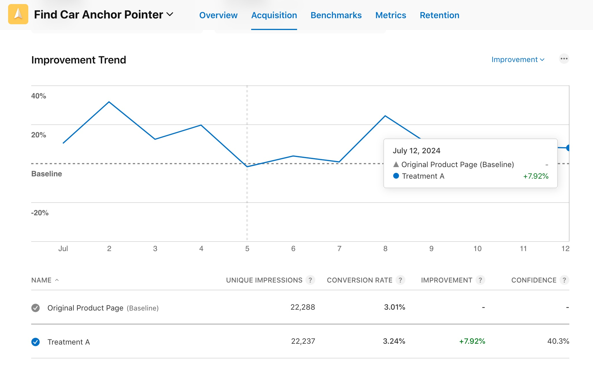
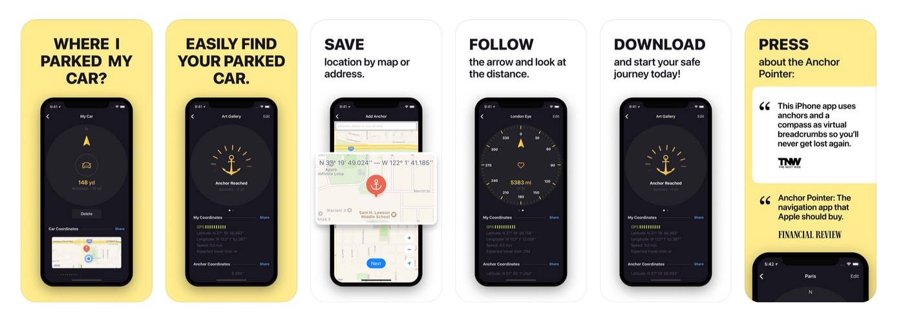
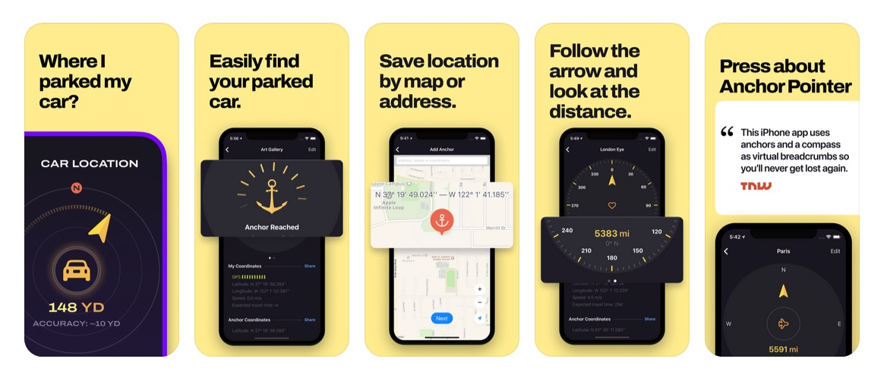

Product Page Optimization Anchor Pointer App
July 14, 2024
Inspired by this post I decided to try this approach with my Anchor Pointer app. The idea is to create a hook with the first screenshot and then highlight features with others, including “zoom” effect per each screen.
The test ran for 14 days and ended with +7.92% improvement and 40.3% confidence.

Current Product Page:

Treatment A (the winner):
